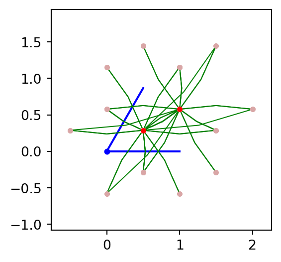

Mostrar código
from pythtb import *
from pylab import *
mpl.rcParams['figure.figsize'] = (3.0,3.0)
def KaneMele(λI=0.06,M=0.3,λR=0.05,t1=1,t2=0):
a1=np.array([1,0])
a2=np.array([1/2,sqrt(3)/2])
lat=np.array([a1,a2])
orb=[[1/3,1/3],[2/3,2/3], # Haldane model spin up
[1/3,1/3],[2/3,2/3]] # Haldane model spin down
KM=tb_model(2,2,lat,orb)
KM.set_hop(t1,0,1,[0,0])
KM.set_hop(t1,1,0,[0,1])
KM.set_hop(t1,1,0,[1,0])
KM.set_hop(t1,2,3,[0,0])
KM.set_hop(t1,3,2,[0,1])
KM.set_hop(t1,3,2,[1,0])
# # Second neighbours spin up
KM.set_hop(t2+1j*λI,0,0,[1,0])
KM.set_hop(t2+1j*λI,1,1,[1,-1])
KM.set_hop(t2+1j*λI,1,1,[0,1])
KM.set_hop(t2+1j*λI,1,1,[-1,0])
KM.set_hop(t2+1j*λI,0,0,[-1,1])
KM.set_hop(t2+1j*λI,0,0,[0,-1])
# Second neighbours spin down
KM.set_hop(t2-1j*λI,2,2,[1,0])
KM.set_hop(t2-1j*λI,3,3,[1,-1])
KM.set_hop(t2-1j*λI,3,3,[0,1])
KM.set_hop(t2-1j*λI,3,3,[-1,0])
KM.set_hop(t2-1j*λI,2,2,[-1,1])
KM.set_hop(t2-1j*λI,2,2,[0,-1])
# Rashba effect
# Same x and y axis for spin
KM.set_hop(-1j*λR,0,3,[0,0])
KM.set_hop(1j*(-0.5+sqrt(3)*0.5j)*λR,0,3,[0,1])
KM.set_hop(1j*(-0.5-sqrt(3)*0.5j)*λR,0,3,[1,0])
KM.set_hop(-1j*λR,1,2,[0,0])
KM.set_hop(1j*(-0.5+sqrt(3)*0.5j)*λR,1,2,[0,1])
KM.set_hop(1j*(-0.5-sqrt(3)*0.5j)*λR,1,2,[1,0])
KM.set_onsite([M,-M,M,-M])
return KM
KaneMele().visualize(0,1)
plt.show()